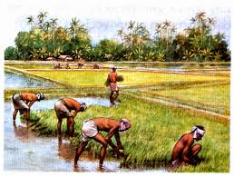

Costumbres

Las costumbres del Imperio Maurya reflejan un rico tapiz cultural que se extendió por la India, desde la administración central hasta las prácticas religiosas y sociales.
El Imperio, conocido por su gobierno centralizado y su extensión territorial, dejó una huella notable en la cultura y la sociedad indias.
Organización Social y Política:
Sistema de Castas:
La sociedad Maurya estaba estructurada en un sistema de castas, que aunque rígido, también proporcionaba una estructura social. La casta de los filósofos, que incluía a monjes, sacerdotes y maestros, ocupaba un lugar central.
Administración Centralizada:
El imperio tenía una administración centralizada con gobernadores regionales y un extenso servicio civil para garantizar la justicia y la seguridad, particularmente para comerciantes y agricultores.
Ejército Poderoso:
La fuerza militar del Imperio Maurya era formidable, con seis comités de coordinación militar, cada uno con seis subcomités.
Religión y Cultura:
Religiones Diversas:
Aunque el budismo se promovió en gran medida, el Imperio Maurya también acogió el jainismo y el hinduismo. El emperador Ashoka, un gran impulsor del budismo, erigió pilares y edictos que promovían la no violencia y la tolerancia religiosa.
Estupas Budistas:
Las estupas, estructuras religiosas budistas que contenían reliquias de monjes fallecidos, fueron construidas en gran medida durante el reinado de Ashoka.
Arte y Arquitectura:
El imperio Maurya produjo un arte y una arquitectura notables, como la estupa de Sanchi y las cuevas excavadas en la roca de las colinas de Barabar.
Prácticas Sociales y Económicas:
Comercio y Economía:
El Imperio Maurya tenía una red comercial que se extendía a Asia Occidental y el Sudeste Asiático.
Industria Textil:
La industria textil, especialmente la producción de tela, era importante tanto para la economía familiar como para el imperio.
Censo y Administración Fiscal:
Se realizaba el censo para fines fiscales y se recopilaban datos sobre diferentes clases de personas, como agricultores y comerciantes.
En resumen, el Imperio Maurya dejó un legado significativo en la cultura india, con su organización social, religiosa, y económica influyendo en la sociedad indio hasta nuestros días.